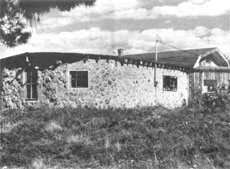
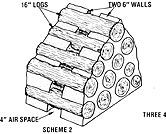
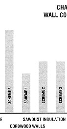
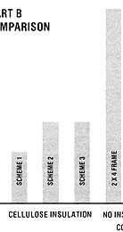
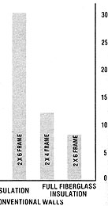
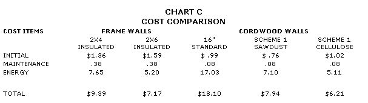

The Thermal Efficiency Of Cordwood Walls
An energy consultant looks at how log-end homes stack up against commercial structures, including wall comparisons and variations, insulation, cost comparison.
By Roger C. Gregoire
January/February 1983
Issue #79 - January/February 1983
An energy consultant looks at how log-end houses "stack up" against conventional structures.
by Roger C. Gregoire
Cordwood construction certainly isn't a stranger to the pages of THE Mother Earth News (restricted) . . . and regular readers are probably already well aware of how inexpensive and easy to build stackwood walls can be. However, not many folks really know whether these log and mortar surfaces are effective - as compared with conventional structures - in controlling heat flow. Of course, the walls are thick (at least 6" and often more than 12 ") . . . so it would be safe to assume that they provide some insulative value, but there's a good bit of calculation involved in determining just how well stackwall measures up to studwall in terms of heat-holding potential.
Well, I've done that piece of research, and discovered that a poorly insulated cordwood wall (no matter how economical it may be to construct) would - over its lifetime - cost its owner thousands of dollars in fuel bills. In fact, under some circumstances a potential homeowner might be better off putting money in a standard, fully insulated house to begin with!
Now don't get me wrong . . . I'm not trying to discourage any future stackwallers (or irritate any current enthusiasts). I just want to point out a few possible shortcomings . . . and show how these can be surmounted. In truth, I'm fully convinced that, if enough thought is given to proper wall construction, this building technique can still be one of the best available alternatives to expensive traditional construction.
THE THREE KEYS
The thermal efficiency of a stackwood wall depends on three variables (we won't concern ourselves with direct air leakage): thickness . . . composition (that is, the ratio of wood to mortar) . . . and the amount (if any) of added insulation.
Obviously, the thicker the wall is, the better it'll be at keeping the heat in a house from escaping. Of course, practicality limits the length of logs used (door frames and windows have to fit in, right?), and most cordwood walls range from 6" to 24" wide, depending on climate and the availability ( and affordability) of building materials.
Before I go any further in this discussion, I'd better give a brief definition of a term that's essential in any discussion of thermal efficiency . . . R-value. Put simply, it's a measure of how resistant a given thickness of a particular material is to heat flow: the higher the R-value of any substance, the greater its ability to stop heat loss. Therefore, when you consider buying insulation, you want to make sure that you get the best R-value you can for your money. [EDITOR'S NOTE: For further information about the R-value and use of different kinds of insulation, check out the article on page 54 of MOTHER NO. 78.]
The walls of a cordwood house, without additional insulation, consist of three mediums, each of which has a different ability to resist heat movement: mortar (which has an R-value of 0.20 per inch of thickness) . . . wood (with an average R-value of 1.0) . . . and air (the R-value of which depends upon a number of conditions).
It's the combination of materials that constitutes the second variable. If you build a 12"-thick wall using 50% wood and 50% mortar, for example, you can expect to lose about 34,875 BTU per square foot a year. (My calculations are based upon the climate of my hometown of Hartford, Connecticut, which has approximately 6,350 degree-days a year.) Now if you vary the ratio a bit-by stacking the logs tighter-and have, say, 60% wood to 40% mortar (giving your wall a slightly higher total R-value), you might stand to lose approximately 32,250 BTU . . . for a reduction in heat loss of 7-1/2%.
ON YOUR MARK, GET SET . . . INSULATE!
As you see, then, log width and wall makeup are important . . . but it's the third variable, the use (and placement) of additional insulation, that can turn a potential "icebox" into a real heat-saver!
Of course, you'll first have to decide where to put your insulation. And as I see it, you've got several options . . . three of which are detailed in Chart A. Schemes 2 and 3 are pretty conventional techniques, using logs that are all the same length. Both incorporate insulative air space between layers of mortar . . . the difference between them is that No. 2 has one large air space, while No. 3 uses two narrower gaps.
Scheme 1 is perhaps the most timeconsuming method of cordwood construction, requiring two separate walls built of short lengths of wood, held together by just enough full-length spacer logs to assure structural stability.
If you plan to rely on air spaces alone to improve your walls' energy efficiency, small gaps will provide better insulation than large ones. This fact becomes evident when we compare the performance of the three configurations shown in Chart A with that of a solid cordwood wall: Scheme 3 - with its two narrow spaces - achieves a 12% reduction in heat loss . . . whereas Schemes 1 and 2 actually contribute to heat loss, adding 1% and 4% respectively. However, by filling the gaps with insulating material (even sawdust, which you ought to have on hand if you're cutting your own wood), you can increase the R-value of all three walls.
For a better idea of which materials work best, look at Chart B. The bar graph not only illustrates how effective two different insulants are when used in the three cordwood construction schemes I've described, but also compares those options with standard 2 X 4 and 2 X 6 studwalls. Notice that the best cordwood-plus-sawdust assembly compares poorly with a fiberglass-filled 2 X 6 studwall . . . but if you use cellulose (which has a per-inch Rvalue of as much as 3.7) in stackwood wall No. 1, the result will be as efficient as the fully insulated frame wall!
Of course, you could build with longer logs or leave larger gaps for insulation than those illustrated, and thus produce more energyefficient walls . . . but doing so would also up your initial construction cost. It's all a matter of how much wood (and money) you have available.
THE BOTTOM LINE
Your main consideration will be the cash you can save in the long run by building a cordwood house rather than a standard structure. In order to supply that information, I'd like to examine the life-cycle costing of the various cordwood schemes I've already described, as compared with those of traditional insulated and uninsulated 2 X 4 and 2 X 6 frame dwellings.
Life-cycle costing, as you may know, is the process of estimating how much cash something will consume over its useful lifetime (in this case, I've assumed a very conservative structure life of 50 years). In Chart C, then, I've estimated the cost of one square foot of stackwood wall in comparison with a square foot of traditional wall . . . when certain expenses are taken into account. The costs I've chosen to include are initial price . . . maintenance over the years (a standard house will need two coats of paint every eight years, while some portion of the mortar in cordwood will have to be replaced every 15 years or so) . . . and fuel (oil) for heating.
As you can see, the energy cost for uninsulated cordwood adds up fast, but Scheme 1 appears to be the method of choice over the long haul.
FOOD FOR THOUGHT
Perhaps I've confused you a little with all my charts and theorizing. My conclusions, to put them simply, are these: If you have cordwood available, it's best to go ahead and use it when building a house. Be sure, however, that the walls are as thick as is practical . . . that the wood is as tightly packed as can be . . . and that you allow adequate space (as illustrated in Scheme 1) to be filled with high R-value insulation such as cellulose.
If you follow this "recipe", you should be able to sit back and enjoy the fruits (in comfort and cash savings) of your labor for many years to come!
EDITOR'S NOTE: For further discussion of cordwood construction, see MOTHER NO. 45, page 96 . . . No. 47, page 29 . . . No. 49, page 118 . . . No. 50, page 112 . . . No. 54, page 106 . . . No. 64, page 148 . . . No. 67, page 110 . . . and No. 72, page 178. (To order these back issues, turn to page 180.)
You might also like to take a look at these two excellent how-to books, Building the Cordwood Home by Jack Henstridge ($8.95) and Cordwood Masonry Houses: A Practical Guide for the Owner-Builder by Robert L. Roy ($7.95). Both manuals are available at many libraries and bookstores or, for the list prices plus 95 cents for shipping and handling, from Mother's Bookshelf(restricted), 105 Stoney Mountain Road, Hendersonville, North Carolina 28791.
|
 |
 |
 |
|
 |
 |
 |
|
 |
|
|